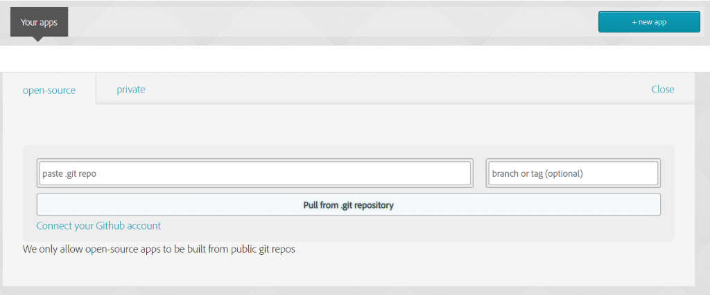

What is PhoneGap and why should we use it?
- Open-source cross-platform Mobile Application development framework
- Better access to native APIs
- Mostly free
- Large community base
- Flexibility using web tech, css, html, javascript
- Robust backend support
- UI libraries for improving user interface
- Easy to work plugins
Brief History
- PhoneGap owned by Nitobi Software
- 2011: Adobe purchased Nitobi Software and named it PhoneGap
- Later releases an open source version of it to Apache
- Renamed it Apache Cordova
Some Examples
My Heart Camera: Photo editing application that allows the users to decorate the image bo adding stickers, making collages, etc.

Sworkit: An application that provides resources and helps users manage their workouts.

TripCase: An application that helps users keep track of everything in their travels, from flights to itineraries.

Warnings
- The mobile app can't be found on apple (due to contract issues), and you can't publish your games on apple unless you have a certification.
- Installation and connection problems with your mobile app and the desktop app is very common. Your app may not load on your phone if your using desktop app to make you app. Also, desktop app may not load your app either
- There is also problems with downloading the desktop app (which is why we recommend CLI). There is no desktop app for Ubuntu/Linux and for windows, you have to find a special beta-zipfile because the other files for downloading the app results in loading screen that never loads anything.
- Even if you are using the CLI to make you app, it still requires you to download Node.js.
- This software is very outdated because on PhoneGap QAF posts the latest entry was from 2018. Moreover, with the rising popularity of Ionic and Flutter, less and less people use PhoneGap
- Based on the languages you can use (html, javascript, and css) PhoneGap is not all that good for gaming apps.
- You will need libraries for framework
- There are a few feature complications. For example, the a lot of google fonts don't work if you just enter them into the style tag. You would have to go through the additional step of downloading them.
How to build a software using PhoneGap?
Installing CLI
Windows:
npm install -g phonegap@latest
Mac/Linux:
sudo npm install -g phonegap@latest
Installing PhoneGap Desktop App
Go to the PhoneGap official website step one
and download the version of the desktop app corresponding to your device.
*Note: The desktop app is an alternative to the CLI method. You do not need to do both.

Important CLI commands
Here is a list of the important CLI commands.
The main commands you need to know to create your app is create and serve. Create creates the files that you need for your app and serve runs it so you can see the results of your code.
Creating a New App (CLI Version)
To create a new app and run it on your local machine, follow these commands:
phonegap create <appName>
cd <appName>
phonegap serve
Windows:
Mac/Linux:
Creating a New App (Desktop App Version)
To create a new app, open the desktop app and click the + symbol on the top left corner then select a template. We recommend choosing "Hello World" because it is the simplest.


Enter a path you wish to create the app in and name it. Then click "create project".

Now run the project on your local machine by clicking the green arrow. The address displayed at the bottom is the server address for the project.

Coding on New App
Coding your app is pretty easy. To make your app, you just have to change the appropriate files. First, let's look at a tree diagram of the relevant files created from the create command.
Based on this diagram, you can easily see that all your html goes into index.html, css goes into the index.css and all javascript goes into the index.js. The other files have their functionalities, but coding your app stays in mainly these three files. If you enter each of the three files, you see the template code that renders this image.
Now insert your code into the three files like so:
Rendering App
To connect your project to your phone, install the PhoneGap Developer app and open it. It should lead you to a page that asks for the server address. Enter the server address from last step and click "connect". If it connected successfully, your phone should display "DEVICE IS READY" as show below.


Similarly, this should be displayed on the page that the server address leads to on your computer if you didn't touch the templates.
Compiling and Launching
To launch your app, you need to go the phonegap build website and make a free account. Click the "+ new app" button and it will ask you for a linke to your github repo:

After you enter all the information, you should see a page like this:
With the QR code, non-apple phones can download you app! For publishing your apps to say the playstore or apple store, this will require extra steps and might require certification.
Mobile Downloading
To download the app, scan the QR code with your phone's camera. You may see some warnings like this:

Press "install anyway" and this confirmation should pop up:

Once you hit install, you will have downloaded the app!
Additional Information
For additional information about Phone Gap, consult the official documentation.